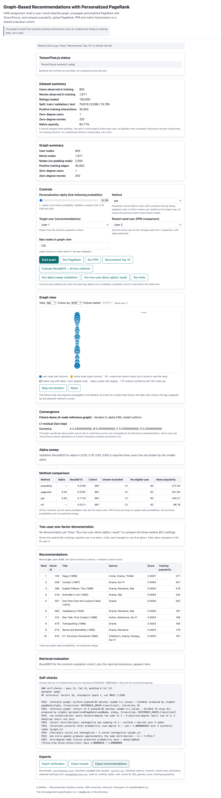

Recommending unseen movies from sparse explicit ratings requires separating useful personalization from popularity and evaluation artifacts. I implement batched Personalized PageRank in TensorFlow.js on the positive-training MovieLens 100K graph and compare it with popularity, global PageRank and three saved matrix-factorization checkpoints under a shared chronological protocol. Validation-selected α=.50 achieves test macro Recall@10 of 0.11219 across 861 users, compared with 0.07602 for popularity, while covering 8.57% of the training catalogue. I find support for this PPR implementation as the strongest tested method, but collapsed MF checkpoints and a warm-user offline evaluation prevent general claims about trained MF or deployment benefit.
Index Terms—personalized PageRank, recommender systems, MovieLens, chronological evaluation, reproducibility.
I rank movies a user has not rated in training or validation, aiming to recover eligible held-out ratings ≥ 4. Missing ratings are unobserved feedback, not dislikes. Useful recommendations should recover relevant movies without merely reproducing popularity or deterministic ties.
For user 1, input includes 217 training ratings and 131 positive graph edges, including Star Wars (ID 50); at α=.50 the output begins with Fargo (ID 100, score 0.000685519, popularity 377), an eligible test hit. I contribute a verified batched graph implementation and a controlled comparison that preserves failed baselines rather than interpreting numerical noise as learning. These results establish offline retrieval behavior on the specified cohort, not current intent or business impact.
I use MovieLens with its explicit-feedback limitations [1]. The inspected 1998 PageRank manuscript [2] motivates restart-based ranking; topic-sensitive [3] and scalable personalized search [4] motivate different restart distributions and computation reuse. Random-walk collaborative recommendation [5] connects graph proximity to recommendation, while MF [6] is a meaningful alternative only when its fitted factors learn useful structure. TensorFlow.js [7] provides the browser computation substrate; I use its versioned API [8].
The same raw files and split as HW5 contain 943 users, 1,682 movies and 100,000 ratings. Unpadded sparsity is 1−100000/(943×1682)=93.6953%. I sort each user's rows by timestamp, then movie ID; floor 80%/floor 10%/remainder yields 79,619/9,596/10,785 train/validation/test rows. No user falls below the five-rating exclusion threshold. Time is nondecreasing within users, not globally consistent; these are rating times, not viewing sessions.
All training-observed 943 users and 1,611 movies form 2,554 nodes, with 45,602 undirected binary positive edges. User 685 and 253 movies have degree zero. The catalogue retains these movies; no padding node is added. Validation excludes all training-rated movies; test excludes all training- or validation-rated movies, regardless of rating. Relevance also requires membership in the training pool.
| Split | Start | No positive degree | Further no relevance | Further MF | Final |
|---|---|---|---|---|---|
| Validation | 943 | 1 | 96 | 0 | 846 |
| Test | 943 | 1 | 81 | 0 | 861 |
The inclusive no-relevance totals 97/82 already contain user 685; the table shows disjoint exclusions. MF scorability adds none. Positive items outside the pool are 4 validation instances/4 distinct movies and 13 test instances/13 distinct movies; combined 17 instances refer to 16 distinct movies. Their user effects are already included above.
User 1/2 have 217/49 training ratings and 131/32 positive movies. Drama accounts for 61/131 and 18/32 positives; recommendations contain 9/10 and 6/10 drama movies. Positive-history mean popularity 106.98/132.78 rises to 228.4/226.7 in PPR. At the primary setting, user-list overlap is 1/10 for popularity, PageRank and PPR, and 2/10 for MF; different exclusions also affect these counts.
I consider popularity as the cheap baseline, MF as a learned alternative requiring a credible fit, and PPR as a graph-based candidate for replacing the tested collapsed baseline. For an undirected component, πi=di/(2|E|) is stationary because πiQij=Aij/(2|E|). Finite restart changes this distribution; the bipartite walk can oscillate without restart. The measured PageRank–popularity Spearman correlations are .98770/.99267/.99665/.99870 at α=.50/.70/.85/.95; mean test Top-10 intersections are 6.931/7.647/8.305/9.289 items, over 861 users.
A dense square float32 transition would hold 26.09MB versus 6.08MB for rectangular R (payload estimates, decimal MB). The measured two-matmul median with a scalar barrier is 5.3ms for one column and 14.7ms for 943 columns; these are kernel proxies, not full propagation times. Full measured global/PPR runs appear in §4.3. Single-user mode is retained for verification; full batching amortizes launches and keeps the numerical rule unchanged.
My pipeline is split → graph → normalization → propagation → movie extraction → exclusion → score-descending/ID-ascending ranking → macro recall. Node order is ascending raw user IDs, then ascending raw movie IDs. On MovieLens the adapter accepts a raw user ID and maps it; an unknown ID throws. Explicit transition fixtures instead accept a bounds-checked node index.
Q has normalized nonzero rows and zero dangling rows; I preserve its required plain-array return and mask. Global restart is uniform, while PPR restart is one-hot at the user. Dangling mass returns through the same v; I do not renormalize to conceal mass errors. MovieLens propagation uses R·(pM/dM) and Rᵀ·(pU/dU) with tf.matMul, never a dense square GPU transition.
The 943 seed columns stop independently at L1 residual<10⁻⁶ or 500 iterations, freezing each converged column. Per-iteration synchronous readback is only 943 float32 residuals (3,772B); synchronous callers require dataSync(), which may block the UI. Final Float64Array storage does not recover precision lost in float32 GPU arithmetic. Explicit disposal and synchronous tf.tidy() scopes manage tensors.
A graph-identity cache keys method/seed mode, α, tolerance, cap, batch size and backend; result copies prevent mutation. Source-content changes require explicit cache invalidation. The recorded runtime is TensorFlow.js 4.22.0, WebGL on Apple M3, Chrome 153.0.8010.12; independent analysis uses NumPy 2.3.5 float64. I set the slider to the validation winner before the separate test evaluation, avoiding the combined runner's test-before-selection order. Exact validation ties select smaller α; global PageRank uses the same α without separate optimization. MF selects earliest strictly improving validation RMSE, a different objective.
| α (link probability) | .50 | .70 | .85 | .95 |
|---|---|---|---|---|
| Validation Recall@10 | 0.11448 | 0.10480 | 0.09002 | 0.07375 |
846 validation users select α=.50. Test uses 861 shared users. Mean popularity is mean positive training degree across each list, then users; coverage is distinct recommended movies/1,611. Light degree ≤ 33 includes 435 users; heavy degree > 33 includes 426.
| Method | Recall@10 | Mean pop. | Distinct / coverage | Light recall | Heavy recall |
|---|---|---|---|---|---|
| Popularity | 0.07602 | 272.00 | 82 / 5.09% | 0.07539 | 0.07667 |
| Global PageRank | 0.07969 | 257.82 | 74 / 4.59% | 0.08531 | 0.07395 |
| PPR | 0.11219 | 244.21 | 138 / 8.57% | 0.13212 | 0.09184 |
| HW6 reference MF | 0.02114 | 96.76 | 39 / 2.42% | 0.02238 | 0.01987 |
| HW5 default MF | 0.02114 | 96.76 | 39 / 2.42% | 0.02238 | 0.01987 |
| HW5 lower-L2 MF | 0.02114 | 96.76 | 39 / 2.42% | 0.02238 | 0.01987 |
MF provenance: HW6 supplied reference:16 factors, 30 epochs, batch 512, Adam lr=.01, L2=.05, seed 20261013, checkpoint 1. HW5 default-20261016-01 and reg-0005-20261016-01:16 factors, 20 epochs, batch 64, lr=.01, L2=.05/.005, init seeds 5101/5102 and shuffle 5103, checkpoint 1 each. I retain both separately; no test-based winner is invented. The supplied reference is the primary baseline; both previous MF models satisfy the assignment's continuity comparison. Its raw held-out RMSE population differs from HW5's warm-only RMSE population.
All three MF checkpoints have identical eligible rankings; one MF column represents them. Every MF score is 3.580603 (rounded); PPR scores below are probabilities multiplied by 10⁴ for readability, not ratings. “Pop” counts positive training users; Y marks an eligible test hit. Full titles, genres and unscaled scores are in the local supplement.
| # | PPR title / genres | p ×10⁴ | Pop / hit | MF title / genres | Pop / hit |
|---|---|---|---|---|---|
| 1 | 100 Fargo (1996) Cr, Dr, Th | 6.855 | 377 / Y | 5 Copycat (1995) Cr, Dr, Th | 28 / – |
| 2 | 258 Contact (1997) Dr, SF | 4.399 | 307 / Y | 6 Shanghai Triad (1995) Dr | 12 / Y |
| 3 | 286 English Patient, The (1996) Dr, Ro, Wa | 4.310 | 279 / – | 18 White Balloon, The (1995) Dr | 1 / Y |
| 4 | 318 Schindler's List (1993) Dr, Wa | 4.038 | 224 / – | 20 Angels and Insects (1995) Dr, Ro | 31 / Y |
| 5 | 357 One Flew Over the Cuckoo's Nest (1975) Dr | 3.772 | 202 / – | 32 Crumb (1994) Do | 46 / Y |
| 6 | 483 Casablanca (1942) Dr, Ro, Wa | 3.597 | 197 / – | 74 Faster Pussycat! Kill! Kill! (1965) Ac, Co, Dr | 2 / – |
| 7 | 222 Star Trek: First Contact (1996) Ac, Ad, SF | 3.328 | 189 / Y | 100 Fargo (1996) Cr, Dr, Th | 377 / Y |
| 8 | 475 Trainspotting (1996) Dr | 3.281 | 164 / – | 102 Aristocats, The (1970) An, Ch | 18 / – |
| 9 | 275 Sense and Sensibility (1995) Dr, Ro | 3.202 | 178 / – | 111 Truth About Cats & Dogs, The (1996) Co, Ro | 131 / Y |
| 10 | 423 E.T. the Extra-Terrestrial (1982) Ch, Dr, Fa, SF | 3.057 | 167 / – | 129 Bound (1996) Cr, Dr, Ro, Th | 76 / Y |
PPR hit IDs{100,222,258}: Recall@10=3/19=.157895. MF retrieves 7/19=.368421 for this user despite its constant scores; PPR is not better for every individual.
| # | PPR title / genres | p ×10⁴ | Pop / hit | MF title / genres | Pop / hit |
|---|---|---|---|---|---|
| 1 | 181 Return of the Jedi (1983) Ac, Ad, Ro, SF, Wa | 6.973 | 339 / – | 2 GoldenEye (1995) Ac, Ad, Th | 41 / – |
| 2 | 9 Dead Man Walking (1995) Dr | 4.977 | 182 / – | 3 Four Rooms (1995) Th | 27 / – |
| 3 | 7 Twelve Monkeys (1995) Dr, SF | 4.744 | 234 / – | 4 Get Shorty (1995) Ac, Co, Dr | 96 / – |
| 4 | 117 Rock, The (1996) Ac, Ad, Th | 4.564 | 215 / – | 5 Copycat (1995) Cr, Dr, Th | 28 / – |
| 5 | 98 Silence of the Lambs, The (1991) Dr, Th | 4.465 | 308 / – | 6 Shanghai Triad (1995) Dr | 12 / – |
| 6 | 121 Independence Day (ID 4) (1996) Ac, SF, Wa | 4.307 | 207 / – | 7 Twelve Monkeys (1995) Dr, SF | 234 / – |
| 7 | 174 Raiders of the Lost Ark (1981) Ac, Ad | 4.029 | 312 / – | 8 Babe (1995) Ch, Co, Dr | 137 / – |
| 8 | 268 Chasing Amy (1997) Dr, Ro | 4.018 | 146 / – | 9 Dead Man Walking (1995) Dr | 182 / – |
| 9 | 475 Trainspotting (1996) Dr | 4.016 | 164 / – | 11 Seven (Se 7en) (1995) Cr, Th | 152 / – |
| 10 | 15 Mr. Holland's Opus (1995) Dr | 4.009 | 160 / – | 12 Usual Suspects, The (1995) Cr, Th | 205 / – |
Both retrieve 0/2=0: eligible relevant movies are Fly Away Home (304) and As Good As It Gets (316). This is a concrete failure case, not evidence that those unseen movies are disliked.
Genre key: Ac action; Ad adventure; An animation; Ch children's; Co comedy; Cr crime; Do documentary; Dr drama; Fa fantasy; Ro romance; SF science fiction; Th thriller; Wa war. Genres are multilabel. The long alternative title of Shanghai Triad is shortened only in this table.
| α | Global: iter / time | PPR: iter range / time | PPR converged |
|---|---|---|---|
| 0.50 | 19 / 2.019 s | 1–22 / 1.935 s | 943/943 |
| 0.70 | 36 / 0.211 s | 1–42 / 0.840 s | 943/943 |
| 0.85 | 78 / 0.347 s | 1–95 / 1.700 s | 943/943 |
| 0.95 | 242 / 0.948 s | 1–500 / 8.680 s | 914/943 |
Each PPR run covers all 943 graph users, not just the 861 test cohort; the degree-zero seed converges in one iteration. Timings are measured on the recorded host, include propagation setup/readback, and are not cross-device benchmarks. Cold compilation affects comparisons. At primary α=.50 all 943 converge; maximum residual 9.9944×10⁻⁷. At .95,29/943 float32 columns reach the cap; float64 converges for 943/943, with identical filtered Top-10 lists. Complete rankings can differ at numerical near-ties; I do not claim bitwise equality.
| Verification | Recorded evidence |
|---|---|
| Supplied / focused | 12/12 supplied; 12/12 recommendation-focused; 10/10 earlier graph-focused. No final supplied failures or pending checks. |
| Filtering / float64 | 6,828 method-user lists: no violations, duplicates, short lists or zero-score inclusions. Independent popularity/PR/PPR filtered lists and hits agree for 846 validation and 861 test users. |
| Seeds / probability | Unknown raw IDs and fixture bounds rejected; IDs 1,2,39,178,196,684,685,686,942,943 checked. All 943 seeds satisfy p(seed) ≥1−α within 2×10⁻⁷ (two float32 ulps near 1). Minimum probability 0. |
| Mass / convergence | Primary PPR max mass error 2.60×10⁻⁷; across grid 8.41×10⁻⁷ (rounded upward). At .95 residual reaches 1.823×10⁻⁶;29/943 columns hit 500. |
| Batched vs single | .85/.95: ten seeds each, identical filtered Top-10; largest absolute vector difference 6.29×10⁻⁹. float64 all 943 converge at every official α. |
| Memory | Graph runs return to 0 live tensors; CPU vector cache 77,151,232 B across four alphas, excluding objects/graph/copies. Peak logical tensor payload 131,354,871 B; texture pool is not a live leak. |
| MF exception | Unchanged supplied trainer leaves 8 tensors after its disposal; restored-factor inference returns to 0 after disposal. No claim of a leak-free trainer. |
For A→B,C; B→C; C→A; D→C, there are no dangling nodes. With uniform p₀=v=(¼,¼,¼,¼), incoming mass is Qᵀp₀=(¼,⅛,⅝,0): A receives¼ from C; B receives⅛ from A; C receives⅛+¼+¼. At α=.85:
Restart only at A gives p₁=.85(0,½,½,0)+.15(1,0,0,0)=(.15,.425,.425,0). The browser stationary vectors differ from the official uniform/seeded references by at most 1.53×10⁻⁷/1.14×10⁻⁷, preserving C>A>B>D and A>C>B>D. This is an agent-executed worked cross-check, not a claim of unaided personal calculation.

Figure 1. Local comparison panel after evaluation at α=.50; cropped presentation of the saved browser screenshot, not a recreated table. Its inclusive 82 no-relevance exclusions already contain user 685. Source: original screenshot.
I recommend PPR as the candidate for a controlled pilot against a successfully trained MF baseline. Primary PPR recall is .11219 versus .07602 for popularity and .02114 for the three collapsed MF checkpoints. Coverage is 138/1,611 (8.57%) versus popularity's 82/1,611 (5.09%); mean list popularity is 244.21 versus 272.00. These results support a pilot, not deployment or a general MF verdict. User 1 receives 7/19 with MF versus 3/19 with PPR; user 2 receives 0/2 with both. A separate MF deployment recommendation is unsupported because none of the tested checkpoints learned useful factors.
PPR still overlaps popularity by 6.393/10 (PageRank 5.612/10; MF .899/10); lower popularity does not prove novelty. Its recall gain is 3.62 percentage points (+47.6% relative), with light/heavy gains 5.67/1.52 points (+75.2%/+19.8%). These subgroup differences are descriptive, not causal or statistically established.
The starter JSDoc specifies a “node index, not a raw user id”, but the supplied adapter passes a raw user ID. I resolved this discrepancy by explicit MovieLens ID mapping and bounds-checked node indices for transition fixtures (graph.js:427–456; adapter script.js:1432–1464). The completed mapping gives 1→0,685→684 and 943→942. The new isolated tests execute the actual mapping/adapter functions with mocked propagation: raw IDs 0,944 and 1.5 are rejected; fixture index 3 is accepted and 4 rejected; the adapter passes raw 943. These are contract tests, not another GPU convergence test. Existing GPU checks cover ordinary/boundary IDs and all 943 seed guards p(seed)≥1−α within 2×10⁻⁷ (§4.3). I do not claim a previously observed numerical failure.
At α=.85, switching user 1→2 changes restart and exclusions: their 1,367/1,556 candidates share 1,324. Overlap is 0/10 under different exclusions but 8/10 on the common pool; six user 1 recommendations are excluded for user 2 and all ten reverse exclusions apply. This does not isolate personalization. Holding user 1 fixed, α=.85→.50 retains 7/10 items, changes popularity 245.5→228.4 (−17.1) and leaves 3/19 hits; user 2 at .85 has popularity 254.9 and 0/2 hits. This is sensitivity, not general accuracy improvement.
HW6 selects epoch 1; all 30 validation RMSEs tie. Mean user/item factor norms are 3.527×10⁻⁵/3.516×10⁻⁵; constant float32 scores yield ascending-ID ties. Test RMSE 1.228900137185 matches mean-only 1.228900137184; both HW5 rankings also collapse. Whole-matrix L2 on every batch (script.js:949–954) plausibly shrinks factors until dot products disappear beside the mean. This is a code-based hypothesis, not a controlled causal finding or completed MF repair.
Exploratory validation-only recall is .12400/.12136 at α=.10/.30 (846 users); primary .50 stays fixed. Next I would validate a learning MF and predeclare an extended PPR grid before a fresh test. The split is not globally temporal, excludes cold cases and measures ratings rather than exposure. Online proposal, not completed: randomize users persistently to PPR versus validated MF; use recommendation click-through rate as primary, guarding latency, empty lists and retention while holding eligibility fixed.
AI assistance. I used Codex for implementation, execution, source checks and report drafting; I specified preservation, MF provenance and validation-before-test decisions. Metadata records gpt-6-astra and CLI 0.163.0-alpha.10.2; desktop build was not recorded. Playwright 1.62.1 is the report renderer; historical experiment versions are in §3.
Independent-script verification. Agent-executed checks reconstruct the raw-data split and relevant-set intersections, reproduce the reference update with exact rational arithmetic, and verify π=d/(2|E|) for the undamped undirected walk (recorded max residual 3.73×10⁻¹⁷). This is not finite-α PageRank equivalence or proof of iterative convergence. Isolated seed-contract tests complement existing float64/GPU comparisons; no training was repeated.
Personal review. I personally checked the recall calculations, reference-graph update, stationarity and user-ID mapping; all checked results agreed with this report. Other review, including first-hand paper reading, remains pending. Trusted without full verification. I rely on recorded tool outputs and upstream data/reference provenance; independent checks do not exhaust every code path, floating-point behavior or paper claim, and offline results do not verify business impact.
Session. The 31,372,577-byte gill_elizaveta_a06_session.json contains 2,466 records from 4 native JSONL parts, freshly snapshotted and wrapped in source order with brackets/separators. Every serialized record is unchanged: zero replacements, redactions or omissions; this JSON array is not a byte-identical native export. Gzip is 19,109,433 bytes; decompression is byte-identical. Snapshot: 2026-10-22 09:39:25.371–2026-10-22 12:54:42.671 UTC. Later packaging is outside it; elapsed time is not active work. Previous exports/backups stay private. Over 10MB delivery and remaining personal review are pending.
[1] F. M. Harper and J. A. Konstan, “The MovieLens datasets: History and context,” ACM Trans. Interact. Intell. Syst., vol. 5, no. 4, Art. 19, pp. 1–19, Dec. 2015.
https://doi.org/10.1145/2827872. [Accessed:2026-10-22].
[2] L. Page, S. Brin, R. Motwani, and T. Winograd, “The PageRank citation ranking: Bringing order to the Web,” Stanford University, technical report manuscript, Jan. 29,1998.
https://ethw-images.s3.us-east-va.perf.cloud.ovh.us/ethw/6/64/Ref13-PageEtAl1998-PageRankCitationRanking.pdf. [Accessed:2026-10-22].
[3] T. H. Haveliwala, “Topic-sensitive PageRank,” in Proc. 11th Int. Conf. World Wide Web (WWW), 2002, pp. 517–526.
https://doi.org/10.1145/511446.511513. [Accessed:2026-10-22].
[4] G. Jeh and J. Widom, “Scaling personalized web search,” in Proc. 12th Int. Conf. World Wide Web (WWW), 2003, pp. 271–279.
https://doi.org/10.1145/775152.775191. [Accessed:2026-10-22].
[5] F. Fouss, A. Pirotte, J.-M. Renders, and M. Saerens, “Random-walk computation of similarities between nodes of a graph with application to collaborative recommendation,” IEEE Trans. Knowl. Data Eng., vol. 19, no. 3, pp. 355–369, Mar. 2007.
https://doi.org/10.1109/TKDE.2007.46. [Accessed:2026-10-22].
[6] Y. Koren, R. Bell, and C. Volinsky, “Matrix factorization techniques for recommender systems,” Computer, vol. 42, no. 8, pp. 30–37, Aug. 2009.
https://doi.org/10.1109/MC.2009.263. [Accessed:2026-10-22].
[7] D. Smilkov et al., “TensorFlow.js: Machine learning for the Web and beyond,” Proc. Mach. Learn. Syst., vol. 1, pp. 309–321, 2019.
https://proceedings.mlsys.org/paper_files/paper/2019/hash/acd593d2db87a799a8d3da5a860c028e-Abstract.html. [Accessed:2026-10-22].
[8] TensorFlow, “TensorFlow.js API, version 4.22.0.” [Online]. Available:
https://js.tensorflow.org/api/4.22.0/. [Accessed:2026-10-22].
I verified the five DOI records via Crossref (HTTP 200), separately from ACM landing-page 403 and IEEE 202 responses. Complete metadata links, redirect status and access dates appear in the local reference audit. The inspected PageRank manuscript is dated January 29,1998; I do not attach the separate 1999-66 catalogue metadata to it. Its archived PDF and the official MLSys/API sources returned 200. Stanford's legacy 200 response was a database error, not a valid record. An unavailable landing page does not invalidate a verified paper.
Harper's author draft has placeholder metadata, so I cite the final 2015 article. Haveliwala's 2003 journal extension is separate from the 2002 paper cited here. Smilkov's proceedings entry does not inherit the arXiv preprint DOI. Experimental numbers are from this project's saved evidence, not the cited papers.
Reproducibility: github.com/gillsha/ML_homework provides the app/source; run instructions and machine-readable experiment evidence are pinned to commit11f3564 (links checked 22 October 2026). The additional hw6_independent_recheck.json and hw6_seed_contract_recheck.json are supplied under week6/results/.